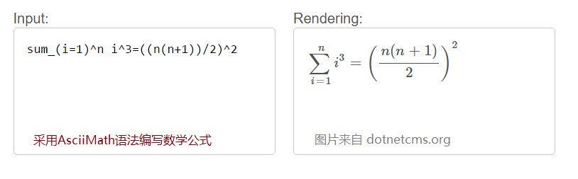

原文连接:https://www.cnblogs.com/mqingqing123/p/12026817.html
在以前，需要在Web页面显示数学公式，常用的都是先制作成图片，然后插入到页面里。这使得后期对数学公式的修改变的麻烦，同时也不利于搜索引擎搜索。
本文将介绍如何在TinyMce编辑器里集成数学公式。先看演示： http://demo.dotnetcms.org/math/
（一）公式录入效果
1.打开演示站点，点击“数学公式”，录入如下文本，系统会自动给出公式的预览
然后，点击OK，你录入的公式就插入到文档里了。你不用担心公式录入错误，因为，公式是以文本方式存储的，你可以再任何时候双击公式
来修改它。
为了更方便体验，你也可以复制下面代码，粘贴到demo的“插入公式”里，体验其效果：
f\left(
\left[
\frac{
1+\left\{x,y\right\}
}{
\left(
\frac{x}{y}+\frac{y}{x}
\right)
\left(u+1\right)
}+a
\right]^{3/2}
\right)
现在，一个更为复杂的数学公式生成了。
当您通过TinyMce编辑器查看器源代码时，下面显示了其源代码：class="math-tex"里的内容在最终显示时，有MathJax内核自动解析。
1.当<span class="math-tex">\( a \ne 0 \)</span>时，一元二次方式<span class="math-tex">\( ax^2 + bx + c = 0 \)</span>的两个根是：
<br><br><span class="math-tex">\( x = {-b \pm \sqrt{b^2-4ac} \over 2a} \)</span> <br> <span class="math-tex">\( f\left( \left[ \frac{ 1+\left\{x,y\right\} }{ \left( \frac{x}{y}+\frac{y}{x} \right) \left(u+1\right) }+a \right]^{3/2} \right) \)</span>
了解了上面功能前，先介绍一下数学符号和公式的背景。
（二）数学公式的问题
为了使得在Web上录入数学符号变的简单，国际上提供了几种解决方法：
1) W3C提出了MathML语言
W3C在2014年提出了Mathematical Markup Language (MathML) ，旨在解决数学符号录入与显示的问题。其思想是和HTML类似，MathML通过使用语义的标签来显示数学符号。有兴趣的朋友可以到 https://www.w3.org/TR/MathML3/ 查看
简单说，要显示 sin x 只要用如下图所示标签即可。
这里 <mi> 是mathematical identifier的简写，他的意思是告诉浏览器 <mi>sin</mi>之间内容是一个整体，内容不要分开。
因为MathML提出的语义太细，导致用的人并不多。
2）MathJax
MathJax是一个开源组织，其前身是由美国数学学会（ American Mathematical Society ）和工业与应用数学学会（Society for Industrial and Applied Mathematics）赞助的一个协会，他提出了一个基于 HTML+JS+CSS的方法来实现数学公式的解决方案，并且逐渐成为行业标准。
MathJax采用类似Markdown的LaTex标记来记录数学符号，并附带了常规的文字语义，例如
a不等于0，直接用 下面代码表示，ne 是 not equal，很容易理解。
a ne 0
(三)MathJax语法
以MathJax为基础，又衍生出几套不用的显示语法。（大家可以做一个简单类别： 操作系统最初是Unix，后来芬兰的托瓦兹在Unix上开发了Linux，苹果在Linux集成上开发了MacOS，谷歌在Linux基础上开发了Android，华为在Android上开发了鸿蒙。。。而Linux更衍生出CentOS，红帽、深度等操作系统。同样MathJax也衍生出不少显示方法，这里介绍主要的3种）
3.1）AsciiMath
AsciiMath以MathJax为基础，提出了一套简单的输入和显示数学符号的方法。详见官网 http://asciimath.org/

3.2）Google解决方法
考虑浏览器兼容性，google提出了根据MathJax语法生成图片公式的解决方法。简单说，你只要在 https://chart.googleapis.com/chart? 后面传入数学符号，系统自动给你生成数学符号。
但是，这个方法有致命缺陷：他生成的是图片，这使得后期对公式修改变的麻烦。同时，当浏览器放大或者缩小时，图片也跟着放大或缩小，导致公式图片变的模糊。
生成图片的好处时，如果页面布局较为复杂，生成图片更容易排版
3.3）MathJax解决方案
MathJax最终通过采用LaTex语法并加上HTML+CSS+JS来显示数学公式，另外他也支持通过SVG渲染数学公式。
3.3.1）Tex语法
TeX最初是一个由美国计算机教授高德纳（Donald Ervin Knuth）编写的排版软件。TeX的MIME类型为application/x-tex，是一款自由软件。高德纳最早开始自行编写TeX的原因，是因为当时的电脑排版技术十分粗糙，已经影响到他的巨著《计算机程序设计艺术》的印刷质量。他以典型的黑客思维模式，决定自行编写一个排版软件：TeX。

以二次方程为例，参考下图：Tex基本思想是：用 2个$符号之间的内容表示数学公式 （这个类似HTML里 style设置为inline，行内元素）。
如果公式要换行，就用4个$表示（这个类似HTML里 style设置为block，块元素）。
3.3.2） LaTeX语法
在TeX实际运行中，偶尔会产生一些问题，考虑如下一句话：
这个苹果是$2.5美元现在涨为$3.0美元
在实际排版时，直接使用2个$，用户的本意是显示文本，但是却被当成了公式，因此LaTeX提出以2个"$$"作为公式的标志。另外LaTex也对Tex进行了预设。
例如：
\documentclass[a4paper]{book}
\begin{document}
\section{ ... a title }
\subsection{ ... a subtitle}
%% Text goes here
\end{document}
执行后的效果是：
下面代码显示了一个矩阵：
\begin{pmatrix}
1 & a_1 & a_1^2 & \cdots & a_1^n \\
1 & a_2 & a_2^2 & \cdots & a_2^n \\
\vdots & \vdots& \vdots & \ddots & \vdots \\
1 & a_m & a_m^2 & \cdots & a_m^n
\end{pmatrix}
你甚至可以编写更复杂的公式：
\begin{align}
\sqrt{37} & = \sqrt{\frac{73^2-1}{12^2}} \\
& = \sqrt{\frac{73^2}{12^2}\cdot\frac{73^2-1}{73^2}} \\
& = \sqrt{\frac{73^2}{12^2}}\sqrt{\frac{73^2-1}{73^2}} \\
& = \frac{73}{12}\sqrt{1 - \frac{1}{73^2}} \\
& \approx \frac{73}{12}\left(1 - \frac{1}{2\cdot73^2}\right)
\end{align}

请注意：上图生成的公式都是文本格式，这意味就算你放大浏览器，文字仍然清晰，而且易于修改。
3.3.3）使用SVG显示公式
MathJax支持使用SVG显示数学公式。要了解SVG，可以参考 https://www.runoob.com/svg/svg-tutorial.html 的介绍。
在以前，如果要在页面显示一个三角形，不用图片，而用CSS+HTML+JS实现，通常非常麻烦。用SVG，则变的简单很多。 见 https://www.runoob.com/try/try.php?filename=trysvg_polygon
只要一行代码，就可以实现：
<svg xmlns="http://www.w3.org/2000/svg" version="1.1">
<polygon points="200,10 250,190 160,210" style="fill:lime;stroke:purple;stroke-width:1" />
</svg>
你完全可以把SVG当做HTML标签使用，很多HTML的属性都可以用的上，更主要的是，他是矢量的，不论放大还是缩小，都不模糊。
在MathJAX里，也支持以SVG方式，显示数学公式。在MathJax的demo站点里有说明：https://github.com/mathjax/MathJax-demos-web
（四）MathJax两种模式的比较
如上所述，Mathjax支持 “HTML+CSS+JS”和“SVG”两种模式显示数学公式，从外表上看，基本上一样，但是浏览器渲染原理并相同。
（1）demo https://mathjax.github.io/MathJax-demos-web/tex-chtml.html
HTML+CSS+JS模式，MathJax通过自定义语义标签显示公式。
（2）demo https://mathjax.github.io/MathJax-demos-web/tex-svg.html
SVG渲染模式，通过svg标签渲染页面。
当你使用MathJax时，你不用关心这些细节，整个渲染流程由MathJax自动完成！！
（五）TinyMce增加数学公式
有了上面铺垫，现在你就可以使用TinyMce编辑器了。
首先在页面放置一个 div或者input作为编辑器容器
<div id="xx" style=" border:solid 1px #000" ></div>
接下来引入TinyMce代码，可以直接到 http://www.tinymce.com 下载 或者引入CDN
<script src="https://cdn.tiny.cloud/1/no-api-key/tinymce/5/tinymce.min.js" referrerpolicy="origin"></script>接下来引入MathJax，可以到 https://www.mathjax.org/ 下载MathJax.js包或者直接引入CDN
<script src="https://polyfill.io/v3/polyfill.min.js?features=es6"></script>
<script id="MathJax-script" async src="https://cdn.jsdelivr.net/npm/mathjax@3/es5/tex-mml-chtml.js"></script>
其中polyfill.min.js不是必须的，他主要是解决浏览器兼容性的问题
最后，需要再加载一个插件 https://github.com/dimakorotkov/tinymce-mathjax
最后，更改效果如下：（关于LaTex语法请自行搜索，网上很多介绍。）
f\left(
\left[
\frac{
1+\left\{x,y\right\}
}{
\left(
\frac{x}{y}+\frac{y}{x}
\right)
\left(u+1\right)
}+a
\right]^{3/2}
\right)
这样，一个基于TinyMce的附带数学公式的编辑器就完成了。再复杂的公式，也so easy~~
欢迎转载本文转载请保留出处：启明星工作室